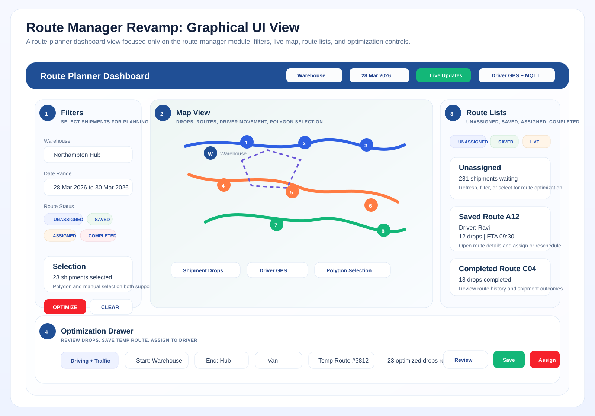

Visual Overview

Reference visual of the route planning workspace and controller-facing route operations.
Independent Project
Route Manager was a map-driven operational workspace for planning routes, reviewing shipments, running optimization, and handling controller-side route actions.

Reference visual of the route planning workspace and controller-facing route operations.
This is one of the strongest full-stack stories because it combines map UI, route lifecycle, real-time updates, and state-heavy workflow coordination.
This public page keeps the project short and interview-safe. Architecture SVGs can be added later.